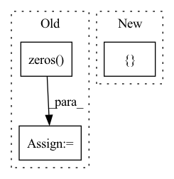

Pattern ID :72
Before Change
assert not torch.isnan(x).any()
x = self.bn(x)
x_a = self.first_step(x)[:, self.n_d :]
sparse_loss = torch.zeros( 1) .to(x.device)
out = torch.zeros(x.size(0), self.n_d).to(x.device)
for step in self.steps:
x_te, l = step(x, x_a, priors)
out += F.relu(x_te[:, : self.n_d]) // split the feautre from feat_transformer
x_a = x_te[:, self.n_d :]
sparse_loss += l
return self.fc(out), sparse_loss
After Change
assert not torch.isnan(x).any()
x = self.bn(x)
x_a = self.first_step(x)[:, self.n_d :]
sparse_loss = []
out = torch.zeros(x.size(0), self.n_d).to(x.device)
for step in self.steps:
x_te, l = step(x, x_a, priors)
out += F.relu(x_te[:, : self.n_d]) // split the feautre from feat_transformerIn pattern: SUPERPATTERN
Frequency: 3
Non-data size: 3
Instances Fragment ID: 291830
Project Name: microsoft/qlib
Commit Name: d5f9395e518d02cc5a05f690ddf5b10e13c4d46e
Time: 2021-03-13
Author: 280835372@qq.com
File Name: qlib/contrib/model/pytorch_tabnet.py
M Class Name: TabNet
N Class Name: TabNet
M Method Name: forward(3)
N Method Name: forward(3)
M Parent Class: nn.Module
N Parent Class: nn.Module
M File Name: qlib/contrib/model/pytorch_tabnet.py
N File Name: qlib/contrib/model/pytorch_tabnet.py
M Start Line: 487
M End Line: 496
N Start Line: 483
N End Line: 490
Before Change
logits /= self.T
// labels: positive key indicators
labels = torch.zeros( logits.shape[0], dtype=torch.long) .cuda()
//// densecl logitsAfter Change
// dequeue and enqueue
self._dequeue_and_enqueue(k, dense_k)
return [l_pos, l_neg], [ d_pos, d_neg Fragment ID: 291837
Project Name: coincheung/densecl
Commit Name: a87888620e2cf9dab6bb7adcf31033d78b09ad66
Time: 2022-03-19
Author: 867153576@qq.com
File Name: moco/builder.py
M Class Name: MoCo
N Class Name: MoCo
M Method Name: forward(3)
N Method Name: forward(3)
M Parent Class: nn.Module
N Parent Class: nn.Module
M File Name: moco/builder.py
N File Name: moco/builder.py
M Start Line: 168
M End Line: 192
N Start Line: 168
N End Line: 197
Before Change
conv_v_img = rearrange(conv_v_img, "B (h Ch) H W -> B h (H W) Ch", h=h) // Shape: [B, h*Ch, H, W] -> [B, h, H*W, Ch].
EV_hat_img = q_img * conv_v_img
zero = torch.zeros( (B, h, 1, Ch), dtype=q.dtype, layout=q.layout, device=q.device)
EV_hat = torch.cat((zero, EV_hat_img), dim=2) // Shape: [B, h, N, Ch].
return EV_hat
After Change
v_img = v_img.transpose(-1, -2).reshape(B, h * Ch, H, W)
v_img_list = torch.split(v_img, self.channel_splits, dim=1) // Split according to channels
conv_v_img_list = []
for i, conv in enumerate(self.conv_list):
conv_v_img_list.append(conv(v_img_list[i]))
conv_v_img = torch.cat(conv_v_img_list, dim=1)
conv_v_img = conv_v_img.reshape(B, h, Ch, H * W).transpose(-1, -2) Fragment ID: 291835
Project Name: feng-lab/pytorch-image-models
Commit Name: 76739a7589ebde1fc6b015e5f9f3e2dc8a73299e
Time: 2021-04-28
Author: rwightman@gmail.com
File Name: timm/models/coat.py
M Class Name: ConvRelPosEnc
N Class Name: ConvRelPosEnc
M Method Name: forward(4)
N Method Name: forward(4)
M Parent Class: nn.Module
N Parent Class: nn.Module
M File Name: timm/models/coat.py
N File Name: timm/models/coat.py
M Start Line: 96
M End Line: 113
N Start Line: 119
N End Line: 137